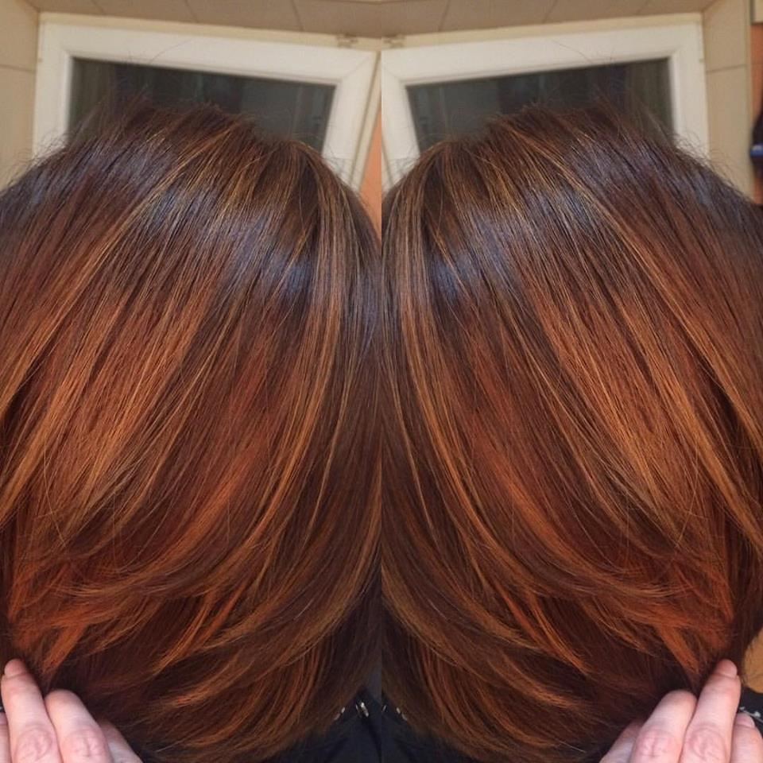

Вже з кінця 2016 року активно набуває популярності техніка фарбування волосся в два етапи, під цікавою назвою "тигрове око".

Особливість такої назви в тому, що гамма кольорів запозичена з напівкоштовного каменю тигрове око.
Поєднання шоколадних відтінків, які розбавляються відтінками карамелі.
Сутність техніки фарбування "тигрове око" полягає у чередуванні темних шоколадних відтінків із янтарними та карамельними і обовязково лише теплі кольори.

Техніка фарбування "тигрове око" особливо пасуватиме жінкам із теплим типом зовнішності. Дуже ефектно виглядає цей образ під темно-карі, світло-карі, зелені та горіховий колір очей!

Чому варто обрати образ для Вашого волосся "тигрове око".
В Голівуді, ця техніка фарбування вже набрала значної популярності серед модниць та особливо голівудських зірок. Джесіка Альба та Дженіфер Лопес уже хизуються своїм "тигровим оком" перед фотокамерами. ТАкож варто знати, чому автор цієї техніки, голівудський стиліст, назвав саме так. Стиліст стверджує, що камінь тигрове око, завдяки поєднанню своїх кольорів, здатен відбивати негатив, то ж чрму не застосувати таке поєднання кольорів й на волоссі?
Запрошуємо Вас приміряти цей інтригуючи образ "тигрове око" у Beauty Studio ІРИНИ ГУЦОЛ!
Такі техніки потребують професійного підходу, якісних фарб та практики, це все Ви знайдете у салоні краси ІРИНИ ГУЦОЛ.
!098 584 4000 ЧЕКАЄМО!